AI in the philosophy job market
Reactions to AI in academia, the humanities, and philosophy, have been mixed. Anecdotally, some of my friends and colleagues think this is the beginning of the end. It’s not that AI is going to take our jobs as philosophers or humanists; rather, inquiry into the history and values of humanity will slowly be edged out because AI can get us those answers faster and more reliably. But some other of my friends and colleagues argue this is a new day for the humanities. Previously, digital humanists were restricted by what they could build or what some nerds in a lab had already built. With AI, the sky’s the limit. Others still aren’t quite sure what to think except that there are obvious moral issues surrounding AI use and we’re probably better off morally without it.
Pope Leo XIV recently released his encyclical Magnifica Humanitas. He discusses the power and potential of the tool to do both good and ill in the world. We could intensify and centralize the power of the war machine, as the Trump administration attempts with Project Maven. Or, you know, we could make discoveries that support enormous leaps forward in the physical and social sciences and make lives better.
For now, it’s slightly comforting to know that Anthropic and the Vatican are attempting to collaborate on AI and ethics, as reported by National Catholic Reporter. Also, it’s some comfort that AI companies are hiring philosophers to think through difficult moral, metaphysical, and epistemological questions. It’s not all peaches and cream, but I’ll take hope wherever I can find it these days.
Academia and professional philosophy have endured and experienced the ubiquity of AI in many ways. Faculty worry that students are using AIs to write papers, complete discussion board questions, or take quizzes. I’m not sure whether to laugh or cry upon learning that some students use AI to complete reflection assignments. Journal editors are getting AI slop for submissions. But how has it shaped the academic job market thus far?
Using Claude’s Sonnet 4.6, I looked for mentions of AI and a suite of related terms–machine learning, neural networks, NLP, robotics, language model, etc–on PhilJobs between 2013 and 2026. If you’ve had a hunch that AI-related jobs have been taking up more room in PhilJobs, you’re right.
AI jobs in philosophy: the numbers
Table 1 gives the numbers, illustrated in plots 1A and 1B. In terms of percentage of all jobs posted, AI-related positions have increased from roughly 1% in 2013 to 16% in 2025. Put otherwise, roughly 1-in-6 jobs last year mentioned AI in some capacity as part of the specializations.
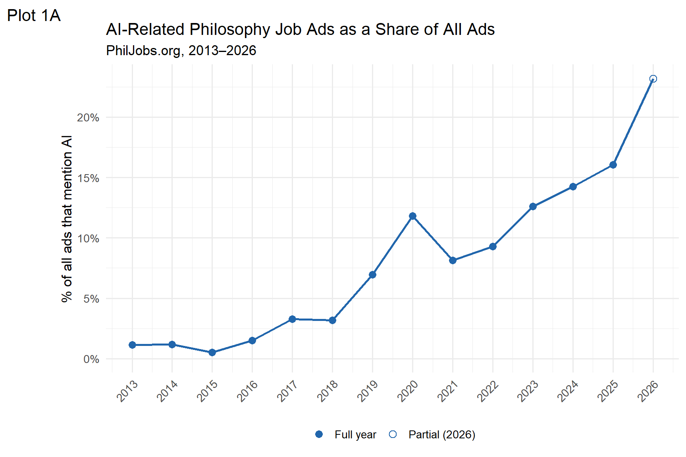
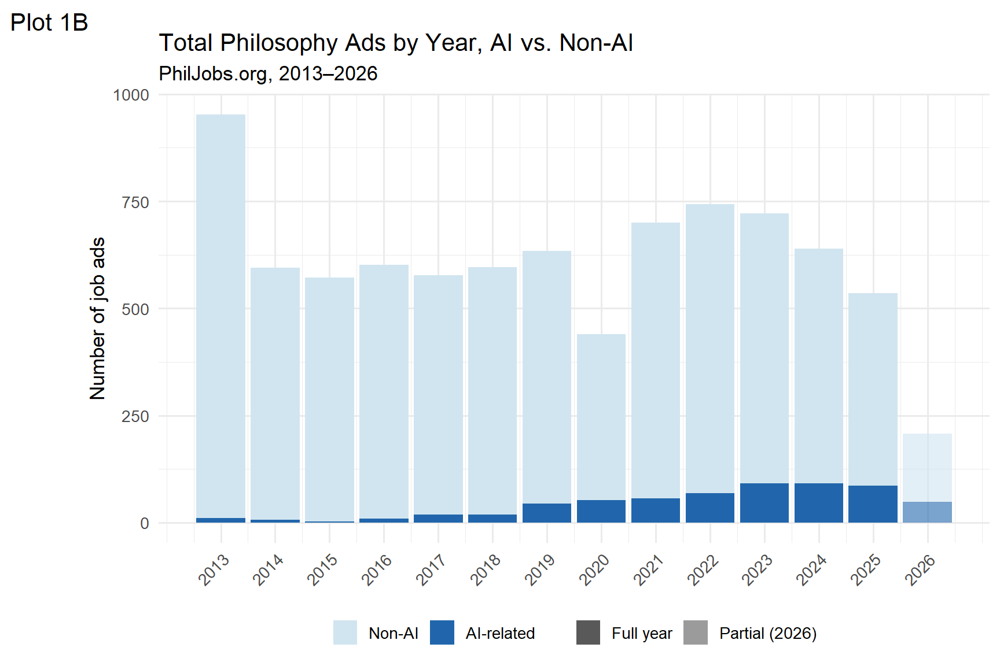
There was a peak in 2020, which then declined and didn’t recover until 2023. The best explanation for this is two factors. First, OpenAI launched GPT-3 that year, which received quite a bit of attention from popular media in, among other places, The Guardian and in academia, e.g. DailyNous. Second, COVID. In absolute numbers, AI hires remained the same, but 2021 and 2022 had more jobs posted as part of the COVID bounce-back.
Kinds of jobs being advertised
In addition to the number of jobs for AI specializations increasing, they are increasing at the junior level.
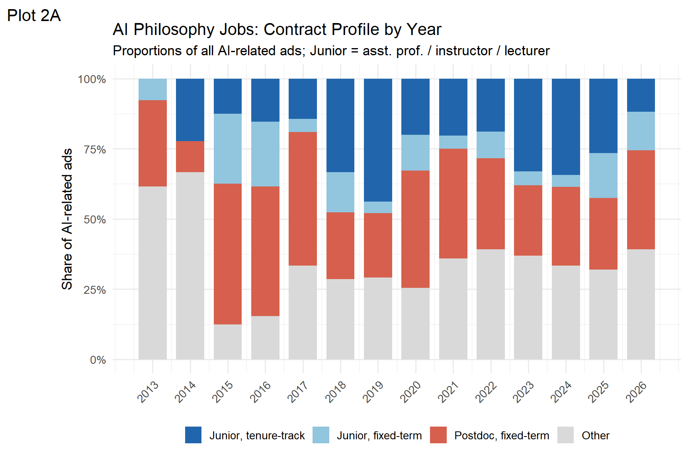
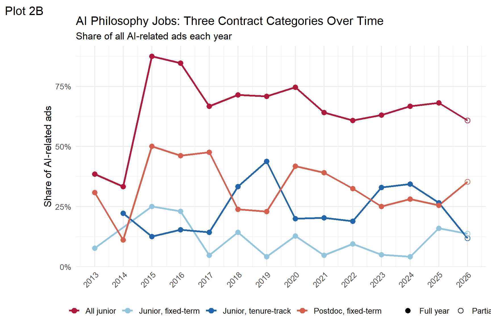
Plot 2A shows that, beginning in 2015, junior positions (including tenure-track, fixed-term, and postdoc) make up over half of all positions advertised. 2B shows the same, along with the total for all junior posiitons. This strongly suggests that departments are thinking about AI specializations in philosophy as a long-term investment, training postdocs and hiring tenure-track faculty. Remarkably, given wider trends in hiring, 2016 is the last complete year in which the share of fixed-term positions was higher than that of tenure-track.
Universities leading the hiring
Pivoting from kinds of jobs to departments, which universities are doing the most hiring in AI?
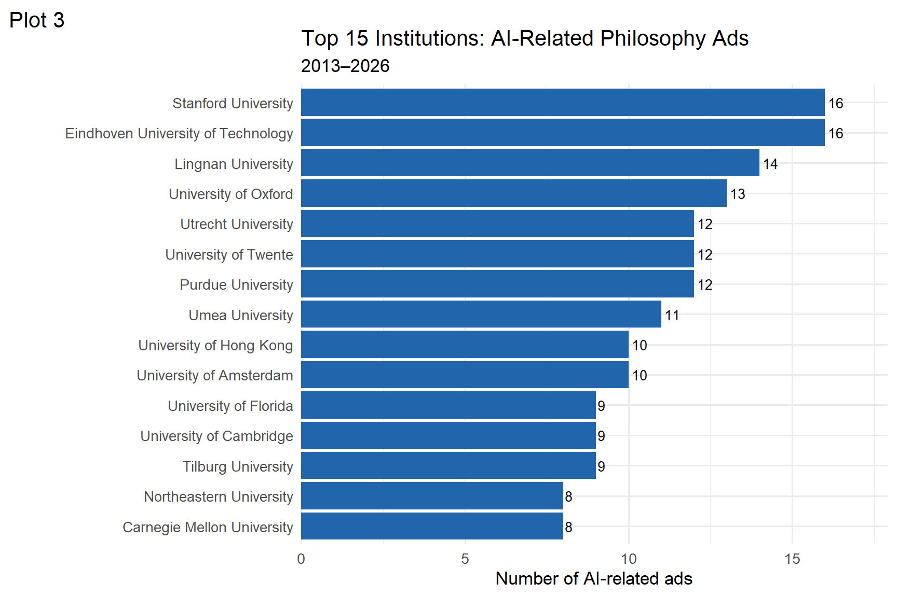
Table 3 and Plot 3 give the rankings, but hiring has varied substantially pre- and post-2020, as seen in Tables 4 and 5:
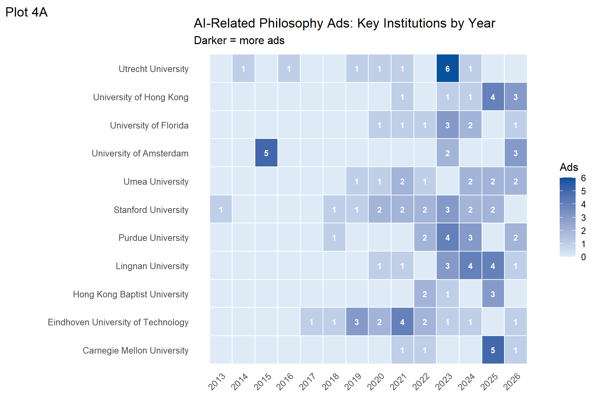
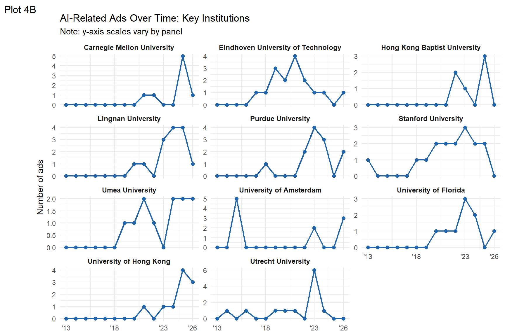
The data suggest three major regions for AI-related specializations in philosophy: the US, the Netherlands, and Hong Kong, seen in Plot 5.
One major limitation with respect to the international analyis: PhilJobs is the major source for jobs in academic philosophy in the English-speaking world. Universities outside the English-speaking world sometimes advertise in Philjobs, but I don’t have any data about the non-English advertising base rates.
Hiring in other areas of the world tend to go through government systems or academic post aggregation systems, such as Education Sub Saharan Africa, the pan-European Jobs in Philosophy, and India’s CU. I did not search or analyze these sites (or others like them) because of (i) language barriers and (ii) lacking the relevant specializations for each region to know if my search would be exhaustive. If you have that expertise and are interested in collaborating, please reach out.
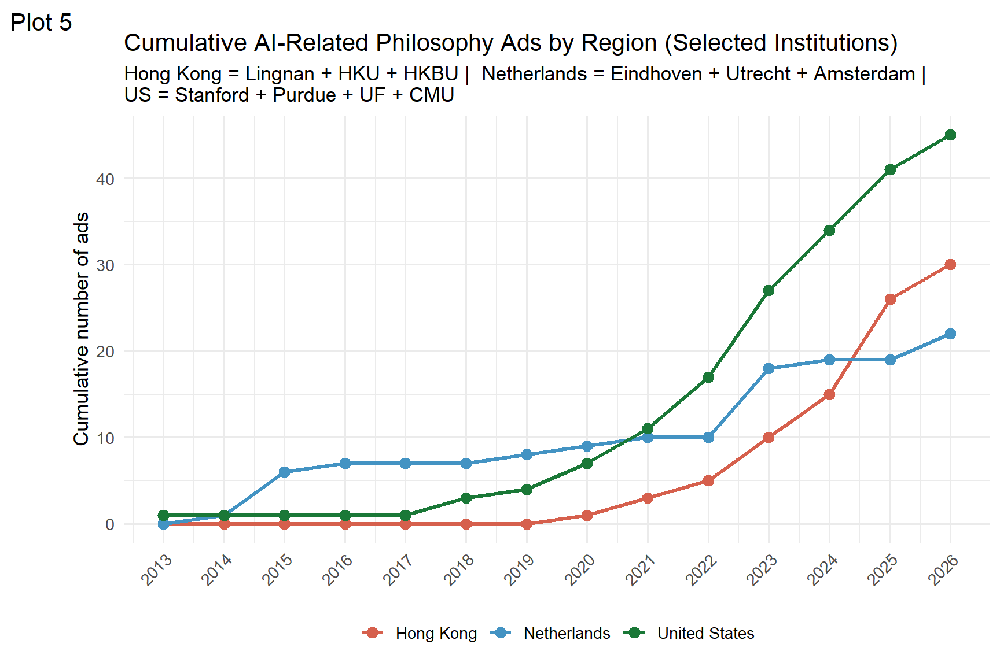
Philosophy of technology and AI hiring
Technology isn’t a new topic of discussion in philosophy. Phenomenologists, post-phenomenologists, and feminist philosophers of science focusing on philosophy of technology (and allied areas in STS) have looked at the ways in which technology shapes our understanding of the world and ourselves. How often do we find philosophy of technology and AI ads appearing together?
This turns out to be a difficult question to ask at scale. AI is, of course, a kind of technology. But philosophy of technology and STS are deep traditions in modern and contemporary philosophy, drawing on hermeneutics, critical theory, existentialism, phenomenology, post-phenomenology, and post-colonial studies, and developed by thinkers like Heidegger, Arendt, Hans Jonas, Sandra Harding, Helen Longino, Don Ihde, and Peter-Paul Verbeek. (This, in the Stanford Encyclopedia of Philosophy, is referred to as “humanities philosophy of technology.”) Because of this uncertainty, it is worthwhile to make a small detour to discuss it here and in the rest of this report.
Two distinct sources of measurement uncertainty appear in these plots, and they work differently.
AI job counts (all previous plots)
The AI job counts carry two kinds of residual error after the false-positive and false-negative audits:
Residual false positives (~11%, 95% CI 6–19%). Some ads in the AI set are not genuinely AI-related. The audit identified and removed 27 confirmed false positives (15 Wake Forest, 3 Minerva, 9 individual cases), but the sampled audit estimated roughly 11% of the remaining set may still be spurious — concentrated in earlier years (2013–2018) when keyword matching was less precise. This means the AI counts are likely slightly inflated, particularly before 2019.
Residual false negatives (~2%, 95% CI 1–4%). A small number of genuine AI ads were not caught by the scraper — primarily ads using terms like algorithmic fairness, explainability, or trustworthy AI that were not in the original keyword list. The supplementary scrape recovered 32 confirmed cases, but roughly 100–280 additional AI ads likely exist across the full study period. This means the counts are also slightly conservative as a second-order effect.
These two errors partially offset each other. The net effect is that the AI trend line should be treated as carrying approximately ±10–15% uncertainty in any given year, with the directional trend being robust across the full period.
Phil-tech / STS job counts (Plot 6A)
The phil-tech counts carry a different and larger source of uncertainty, represented by the green ribbon in Plot 6A.
The scraper identifies phil-tech jobs using explicit keyword matching. The confirmed count (solid green line) includes only jobs whose full page text matched a phil-tech term — this is a 100%-precision lower bound, meaning every job on that line is genuinely a phil-tech position, but the line undercounts the true total.
To estimate how many jobs were missed, a random sample of 50 non-flagged jobs per year was fetched and checked manually. The fraction of that sample that turned out to be phil-tech (the sample hit rate) was used to project how many jobs across all non-flagged ads were also likely phil-tech. A 95% Wilson confidence interval on that sample hit rate was then propagated through the projection to produce lower and upper bounds on the estimated true count.
The green ribbon spans those bounds, expressed as a share of all philosophy ads. Its width reflects two things: the sample size used to estimate the miss rate (50 jobs per year, which is small), and the underlying variability in the hit rate from year to year. In years where the sample hit rate was 0% (e.g., 2013–2014), the lower bound collapses to the confirmed count while the upper bound remains wide — this is the Wilson interval’s correct behavior when a small sample turns up zero hits, since zero hits does not mean zero true positives.
How to read the comparison between phil-tech and AI in Plot 6A: If the AI line lies above the top of the green band, AI hiring is unambiguously higher than phil-tech. If the AI line lies within the band, the true phil-tech count could plausibly match or exceed AI in that year. If the AI line lies below the solid green line, phil-tech is definitively larger even before accounting for missed ads.
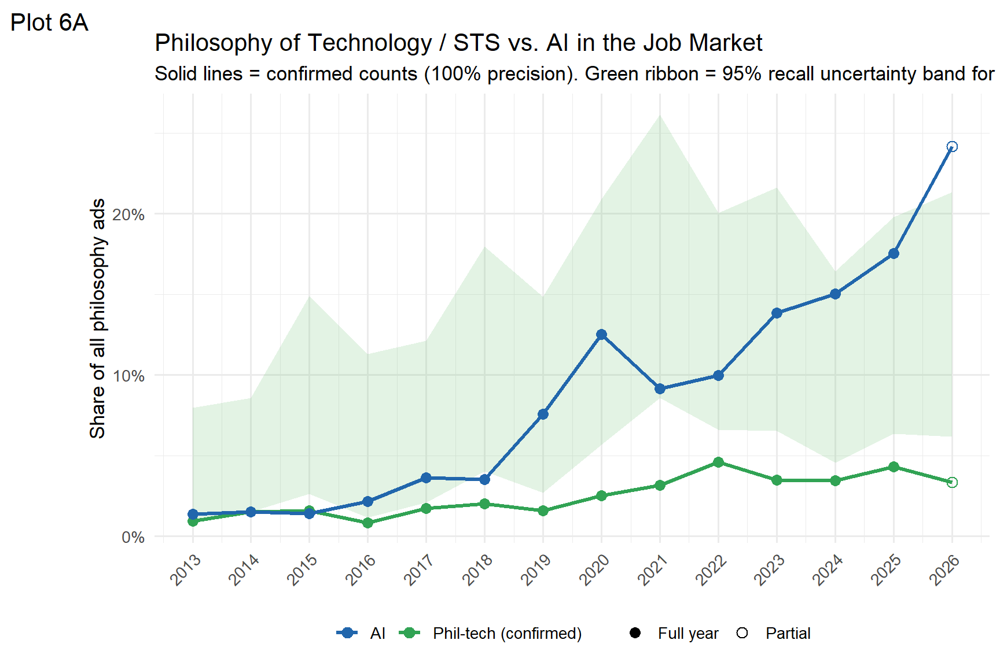
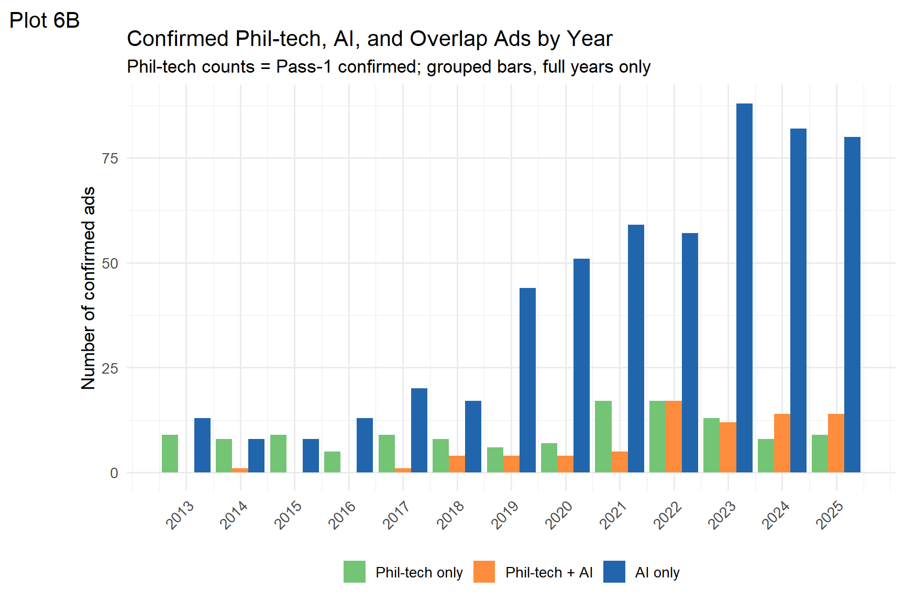
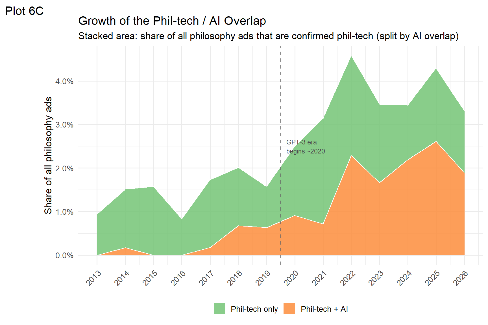
Two different conditional values are relevant in looking at AI and phil tech ads: the likelihood of an ad mentioning phil tech given that it mentions AI and the likelihood of an ad mentioning AI given that it mentions phil tech. The former is interpreted to indicate how often AI-focused positions are looking for philosophers of technology. Table A (below, appendix) indicates that this value is roughly 14% over all years. The latter is interpreted to indicated how often phil tech positions are looking to engage AI. Plot 6D shows that these values are consistently higher than 14% beginning in 2018. Table 7 shows the (non-conditional) overlap values across two periods: 2013-2019 and 2020-2026, the cutoff (as mentioned previously) defined by when LLMs, and specifically GPT-3, came to be highly visible.
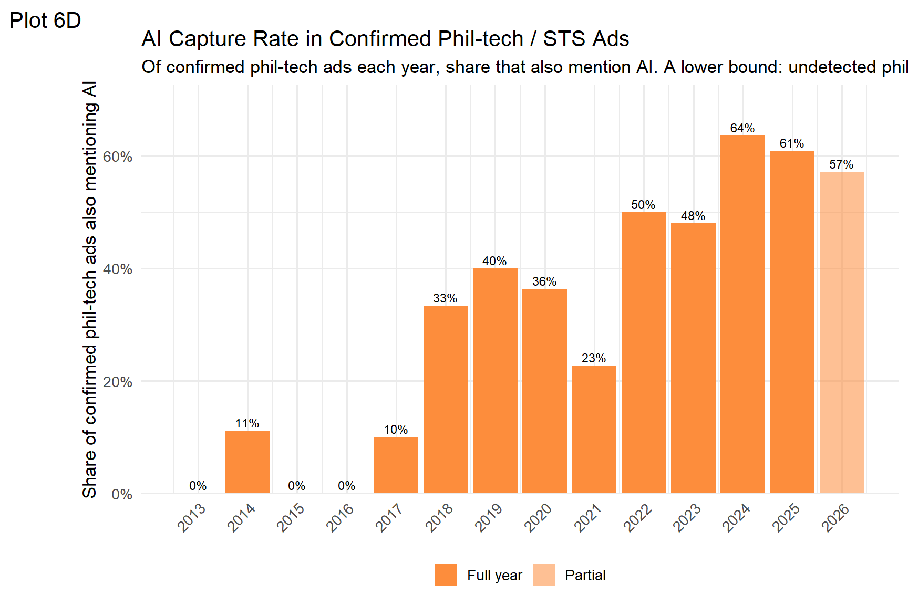
Conclusions
What are the takeaways? The least controversial and most obvious is that the relevance for AI as an area of research in contemporary philosophy has grown significantly in the last 13 years and doesn’t indicate any slow-downs.
Less obviously, hiring to date doesn’t seem to engage with historical and non-analytic traditions in philosophy, as indicated in the analyses of STS and philosophy of technology in AI ads. This is further substantiated by the data in the appendix on AOS. This, I think, hamstrings future work. Global and historical philosophical traditions are abundant with conceptual resources for thinking about our future with AI which we ignore at our professional and social peril. At a time when the costs of AI become hourly clearer, philosophers’ collective contributions are vital–or at least they stand to be.
Finally, the data are about philosophers investigating AI. There is little, if any, data on philosophers using AI in their work. Digital humanists as a whole are capitalizing on the upswell of AI, but how many among these are philosophers? I mentioned at the start that I used Claude’s Sonnet 4.6, but even that has been for data collection and analysis, not necessarily for doing philosophy in some more traditional sense. But the history of philosophy is chock-full with examples of new technologies (material and conceptual) changing how philosophy is done: writing, the printing press, probability theory, modal calculi, personal computers, the Internet, email. One might reasonably wonder if AI’s impact will not be only on what philosophers talk about but also how they do philosophy.
Appendix: AI and AOS
Within philosophy and AI, there are several relevant specializations: ethics, mind, logic, philosophy of computation, etc. The following tables and plots show these distributions. Note that job ads will often fall into multiple AOS, the percentages summing to over 100%.
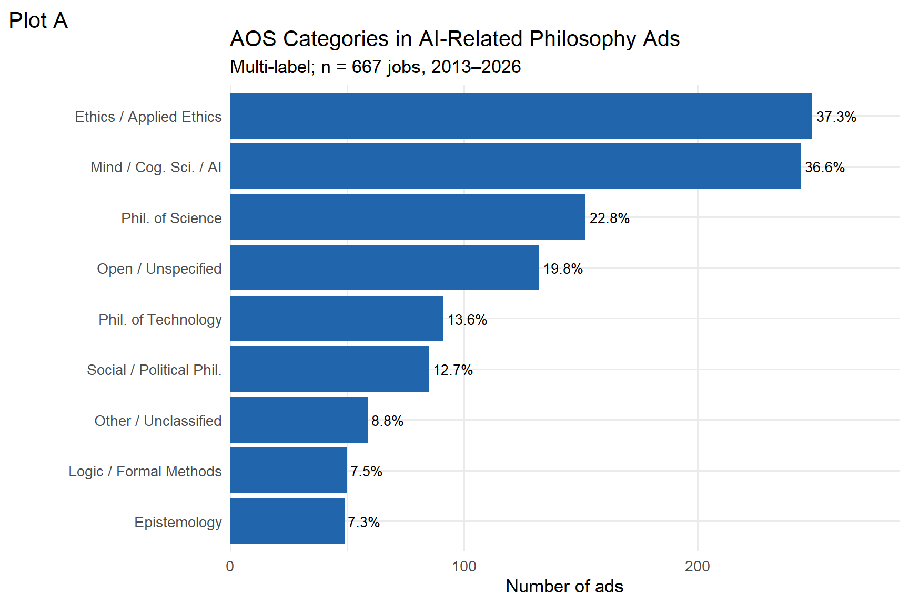
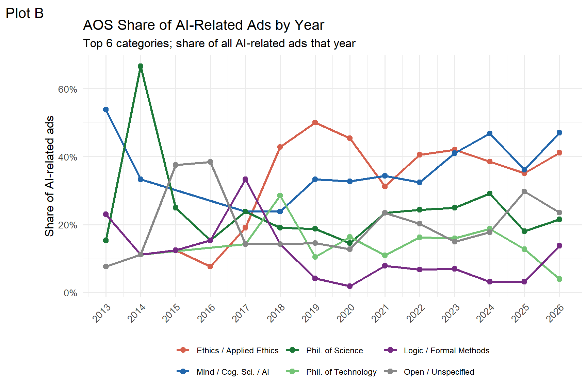
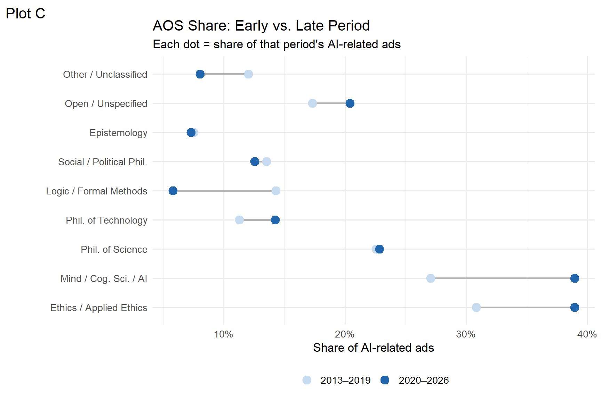
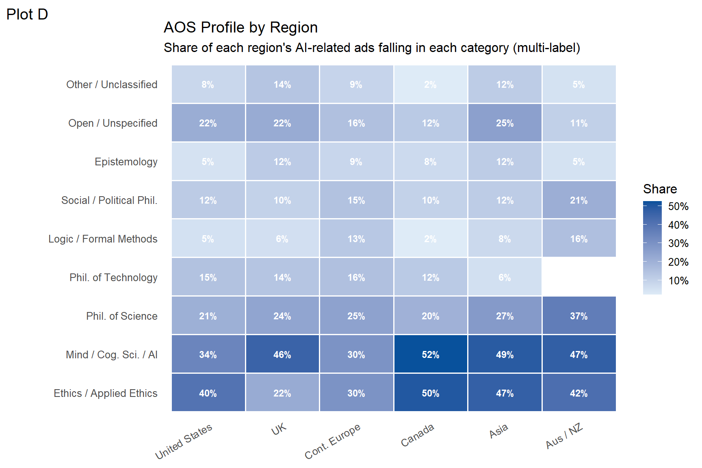
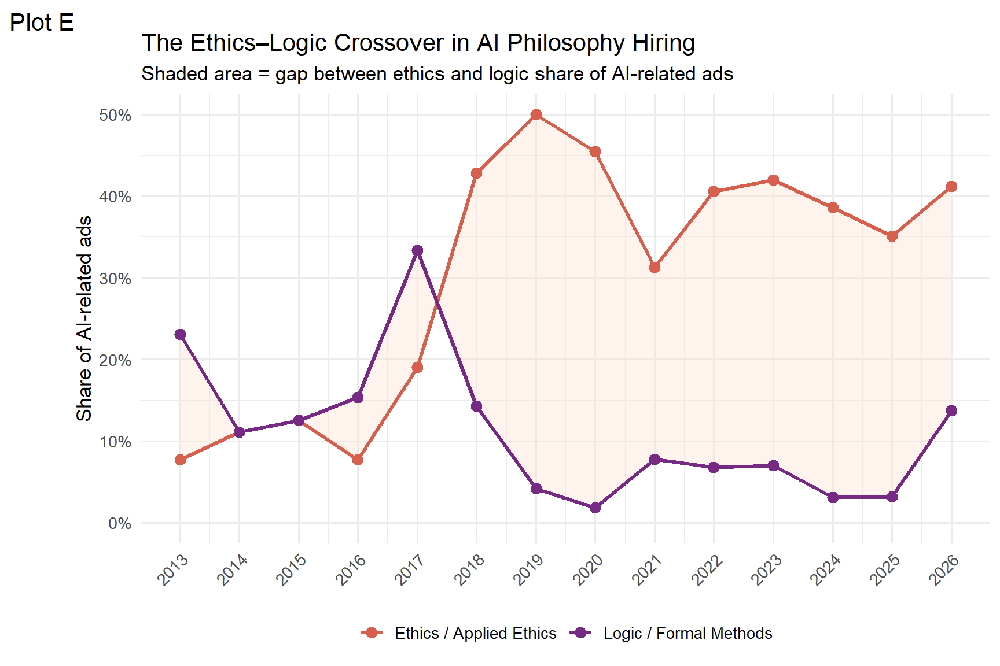
UPDATE (6/4/2026): Data gathering and audit methods
False-positive audit: A stratified random sample of 84 jobs (approximately six per year) was drawn from the dataset and each page was re-fetched and checked against a broad verification regex. Jobs with no AI-related term found were flagged. This identified two institutional clusters of false positives — Wake Forest University (15 ads) and Minerva Schools at KGI (3 ads) — whose listings were caught by AND-matching of common tokens rather than genuine AI content, as well as nine individual false positives from unrelated positions (a dean search, a community-college adjunct, an Asian philosophy hire, and others). All 27 were removed. The estimated residual false-positive rate after correction is approximately 11% (95% Wilson CI: 6%–19%), suggesting the dataset remains slightly inflated in absolute terms. False-negative audit: A sample of 643 non-AI-flagged jobs drawn from the phil-tech recall analysis was re-fetched and checked with the same verification regex. Fourteen jobs (2.2%; 95% CI: 1.3%–3.6%) matched AI-related terms and were added to the dataset. Two categories of terms drove most misses: *robotics* positions (not in the original keyword list) and ads using the phrase *ethics of AI* in body text (the scraper searched *AI ethics* but not the reverse). A targeted supplementary scrape using new keywords (*language model*, *robotics philosophy*, *ethics artificial intelligence*, *autonomous systems*, *foundation model*, *generative model*) identified 18 additional confirmed AI jobs. Combined, 32 confirmed false negatives were added. The estimated residual false-negative rate is approximately 2% (95% CI: 1%–4%), meaning the dataset is on balance conservative — it undercounts slightly more than it overcounts. Institution name normalization: Institution names extracted from PhilJobs job pages contained several systematic artifacts: (1) the h2 parsing algorithm captured only the last comma-delimited segment for multi-campus institutions, yielding city or country names ("Madison," "Hong Kong," "Sweden") rather than full institution names; (2) character-encoding errors produced garbled characters in non-ASCII names (e.g., "Ume? University"); (3) variant spellings existed for several institutions (e.g., "Technical University of Eindhoven" vs. "Eindhoven University of Technology"; "Oxford" vs. "University of Oxford"). Partial names were resolved by re-fetching the page `